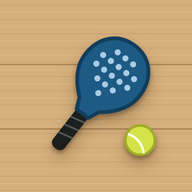
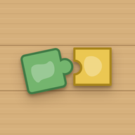
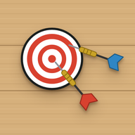

Americano
För padel-americano med 4–12 spelare. Appen lottar matchschemat, räknar tabellen medan ni spelar och ordnar slutspel. Kvällens resultat ligger kvar tills du tömmer dem inför nästa gång.
Små appar jag har byggt för mig själv och mina vänner. De är gratis, kräver inget konto och sparar allt i din egen telefon eller dator.

För padel-americano med 4–12 spelare. Appen lottar matchschemat, räknar tabellen medan ni spelar och ordnar slutspel. Kvällens resultat ligger kvar tills du tömmer dem inför nästa gång.
Kartspel om huvudstäder. Du ser ett land på kartan, säger eller skriver namnet på huvudstaden och trycker där du tror att den ligger. Poäng för rätt namn och för hur nära nålen hamnar. 165 länder, hela världen eller en världsdel i taget.
Version 1.1 · 3 november 2026 · Ny, under provspelning

Kortspel om gränser. Du ser konturen av ett land och gissar hur många grannar det har, och vilka. Vänd kortet så fylls grannarna i på kartan. Välj hela världen, en världsdel, Sveriges län eller USA:s delstater. Spela själv eller fråga en kompis.
Version 1.0 · 3 november 2026 · Ny, under provspelning

Kartspel för två lag, som tävlingen i På spåret. Båda sätter ut en pil där de tror att platsen ligger, och den som hamnar närmast tar poängen. Europa, Sverige eller hela världen. Spela på en telefon eller på varsin.
Version 2.8 · 3 november 2026 · Ny, under provspelning
Tyck gärna till om apparna. Ros och ris uppskattas lika mycket, liksom förslag på förbättringar och fel du har hittat.
Apparna är byggda tillsammans med Claude. Claude är AI och kan göra misstag. Det kan jag också.